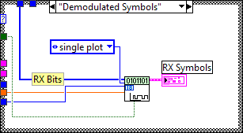

This example demonstrates generation and analysis of PSK modulated signals. You can specify transmit filter parameters, Eb/No, and frequency offset. This example demonstrates programming techniques for resetting the transmitter in cases where the receiver (demodulator) lock is lost. You can see the results of the demodulation on an eye-diagram plot, and perform measurements such as bit error rate.
